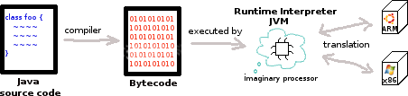
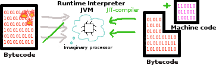

Compiling of Android/Java vs. C
Growing up with Java and Eclipse I never wondered myself about compilation processes. The only thing I did, was pressing the launch-button in Eclipse and be delighted by the result of my program. So this article is about how machines comes to the joy of understanding our source code. It covers Java, Android and C.Java1
Java source code is compiled into Bytecode. The Bytecode gets executed by a Java Virtual Machine (JVM), which is a Runtime Interpreter. A JVM is build upon an imaginary processor, which communicates and translates between the Bytecode, the operation system (os) and it's hardware, on which it should run.
This has the advantage, that the compilation process of source code is independent of the underlying os and hardware. But it is slower than running machine code directly, because the work of the hardware (e.g. to decode and execute instructions) has to be repeated in the JVM.To ease this issue, the JVM has a Just In Time compiler (JIT). When some Bytecode is executed again and again (a so called hotspot), the JIT can compile Bytecode to machine code for the underlying os and it's hardware during runtime.

So the advantage of portability is obtained and the disadvantage of Bytecode is eased.Android2
The basics of Android Apps will not be discussed here. Please use the offical developer guide for that.Basically Android Apps (apk) are based on Java. But Android uses the Davlik Virtual Machine instead of the JVM as Runtime Interpreter. Funnily Java source code is translated into Java Bytecode first anyway and then the Java Bytecode is translated into Dalvik Bytecode. But packing an apk is more than compiling Java source code. Below is an picture, which gives an overview. Details are here.